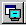
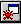

Debugging and Interactive Development¶
In this chapter, we look more closely at Open Dylan’s debugger tool.
The debugger¶
The debugger is a tool for browsing and interacting with a paused application thread. Any thread in an application can be viewed in the debugger (or you can use separate debugger windows for different threads). You can consider the debugger a specialized version of the browser that browses paused application threads.
The debugger provides standard debugging facilities like stepping and breakpoints. It also provides a graphical interface for browsing the state of the control stack in a paused application thread, allowing you to examine local variables and arguments in each stack frame.
You can also use the debugger’s interaction pane to interact with a paused application thread. Simply enter Dylan code at a prompt, and the code is executed in the context of the paused thread.
Debugger panes¶
We now take a look at the basic debugger window panes.
The easiest way to bring up the debugger is to choose Application > Debug in the project tool. This starts the application, then pauses its main thread and opens the debugger window on that thread. We can demonstrate this now with Reversi. If you are already running that application, exit it now.
Choose Application > Debug in the Reversi project window.
The debugger.¶
The debugger has four panes: the context pane, the stack pane, the source pane, and the interaction pane.
Context pane¶
The pane at the top of the debugger is the context pane. The context pane gives an overview of the state of the application thread to which the debugger is attached. You can hide the context pane by using View > Context Window.
The debugger’s context pane.¶
Here, the application stopped because there is a breakpoint on the call to play-reversi in start-reversi.dylan. That is the function call that starts the application running. The rules for what appears in the context pane are as follows.
If you paused the application yourself, by choosing Application > Pause, or by clicking the pause toolbar button (), the message “User requested pause” appears in the context pane of all open debugger windows.
If the application paused because of some other event,
the context pane for the debugger on the thread that caused the pause shows a message explaining why that thread paused the application.
the context pane in all other open debuggers shows the message “Stopped in Thread x”, where x is the name of the thread that has stopped.
Often the message describes an unhandled Dylan error or breakpoint. The message could also describe an out-of-language error (for example in foreign code) or one of a number of application events upon which you can ask the debugger to pause the application, such as when a library is loaded. You can see a list of possible exceptions and the actions that will be taken upon them in the Debugger Options dialog. See Debugger options.
Stack pane¶
The stack pane shows the thread’s control stack at the moment it was paused, with certain call frames filtered out. It depicts the stack in a tree view. We call this a stack backtrace or backtrace.
When a debugger window opens, the stack pane opens in expanded form, showing the backtrace details. You can expand and collapse the backtrace in the normal way for a tree view, by clicking + or - symbols. In addition, the menu commands View > Expand, View > Expand All, View > Collapse, and View > Collapse All control expansion.
Note
The stack pane may not always contain exactly what you expect to see. First, a function call you expect to see might have been optimized away during compilation. Second, because the stack pane filters out certain call frames by default, a frame you are looking for may only become visible when you change the filtering settings. By default, only frames for Dylan functions defined in or imported into the thread’s current module appear in the stack pane. This default setting is indicated by “Filtered visible frames”, which appears in the stack pane filtering drop-down list (see Searching the stack backtrace for the cause of the error for information about the drop-down list settings).
Choose the View > Debugger Options dialog’s Stack page in the debugger window to control the filtering rules. See Stack options for details.
You can select any item shown in a backtrace and right-click to produce a pop-up menu. The menu allows you to carry out other operations on them, such as browsing their values or editing their source code representation. Double-clicking an item opens it in the browser.
Thread titles¶
The root node in the backtrace is the number and title of the thread. Threads are assigned titles using the following scheme:
Thread x : “name “.
A Dylan thread that has a name. The name is a string.
Thread x : Anonymous thread
A Dylan thread that has no name.
Thread x : Foreign thread
Any non-Dylan thread.
The initial thread in a Dylan application is always called Thread 1: “Main thread”. Each subsequently created thread is assigned an integer number by incrementing the value used for the previous thread, and a title derived according to the scheme above.
In Reversi, there is only one thread, the main thread.
Call frames¶
Under the root node, at the first level of expansion, the stack pane lists the call frames in the backtrace. The most recently executed call frame is listed first.
Each call frame is represented by the name of the function or method whose call created the frame. If you select a name, the source code associated with it (if any) appears in the pane opposite. See Source pane for details of this pane.
Beside each frame name is an icon indicating the sort of call that created the frame:
This was a call to a method selected through run-time dispatch.
This was a direct call, either to a method whose dispatch details were all worked out at compile time, or to a method constant (a function).
This was a call to a foreign (non-Dylan) function. Some of the calls that the Dylan run-time system makes are foreign calls.
This arrow denotes the position of the stack pointer in the thread. It will always be at the top of the list of frames.
When debugging, be aware that some function call frames may be optimized away by, for example, inlining or tail-call optimization. This is particularly important to note if you are compiling in Production mode, where more optimization occurs than in Interactive Development mode.
The debugger also hides certain stack frames concerned with activities like method dispatch, since these are of no interest in debugging user applications.
You can filter other frames out of the backtrace if you wish, according either to their type or to their names. For instance, you can filter out all foreign call frames or all frames whose names contain a particular string. See Stack options.
The debugger’s stack pane.¶
Local variables and call parameters¶
Some call frames shown in the backtrace can be expanded one level further. At this final level of expansion, the pane shows the values of the local variable bindings, including the values that were passed as parameters in the call. Bindings are listed in the order in which they were created, so the parameter bindings appear first.
The bindings, preceded by a yellow star icon (), are shown in the form:
*name* = *value*
Where value is displayed in a summarizing notation, which defaults to
the value’s class enclosed in curly braces if there is no simple printed
representation. For example, basic numeric types, strings, booleans, and
sequences thereof can be printed literally, but an instance of
<reversi-frame> cannot.
Source pane¶
The debugger’s source pane shows a source code definition for the method or function that created the call frame that is currently selected in the stack pane.
A text field above the source pane shows the location on disk of the
source file containing the definition. If you click the Edit Source
( ) button, Open Dylan opens the source file in an editor
window, with the insertion point placed at the start of the definition.
) button, Open Dylan opens the source file in an editor
window, with the insertion point placed at the start of the definition.
If the debugger cannot locate the source code for the method or function that created the selected call frame, or if you select a local variable or the backtrace’s root node, the debugger leaves the source pane empty, writes “No source available” in the field above the source pane, and makes the Edit Source button unavailable.
The source pane shows the same green arrow () seen in the stack pane. This current location arrow shows the point to which execution within that call frame had proceeded before the application was paused. (Thus the current location arrow that you see in the source pane for the top-most call frame in the stack pane is the most accurate depiction of the point at which execution was paused.)
Often, the arrow is located at a point where a function has called another function that has not yet returned, or at the point at which execution will resume when a function returns.
The current location arrow in the debugger’s source pane.¶
The line at which the arrow is located is not always precisely correct, because optimizations carried out by the compiler may have produced object code that does not correspond to the source code in a way that can be easily depicted in this pane. The chance of imprecision is increased when compiling a project in Production mode.
In our example, the arrow appears at the start of the definition of the play-reversi method. This shows that execution paused at the beginning of the execution of play-reversi.
Interaction pane¶
The interaction pane allows you to enter Dylan expressions for evaluation in the context of the paused thread. (In some language implementations, an interaction tool like this is called a listener.)
See Interacting with an application for a discussion of interaction.
The interaction pane also logs thread events that the debugger noticed
(such as DLL loading) and debugging messages explicitly output by the
thread (for example via the Dylan library’s
debug-message function in the simple-debugging module).
The pane does not collect ordinary output from the application being debugged. Such output continues to go to its ordinary destination, such as the standard output.
Keeping debugger windows up to date¶
It can be costly to keep all the panes of open debugger windows up to date. For this reason, Open Dylan only refreshes the information in debugger windows in certain circumstances.
Note
In the following descriptions, a window being “refreshed” can also mean the window being displayed for the first time, with up-to-date contents, if it has not yet been displayed.
If an application thread pauses and a debugger window appears (or comes to the foreground), the debugger window for that thread is refreshed automatically.
Threads pause when: there is an unhandled Dylan error in the thread, there was an out-of-language error in the thread, execution in the thread reached a breakpoint or step point, or the thread reached the end of an interactive evaluation.
If you issue the pause command (Application > Pause or
If you issue the pause command from the project window or editor, the debugger for the application’s main thread is refreshed.
In all of these circumstances, any other open debugger windows will not be refreshed unless you choose View > Refresh in them. If you choose View > Refresh All Debuggers, Open Dylan updates every open debugger window.
The Misc page of the debugger’s View > Debugger Options dialog contains the option “Refresh all open debuggers when entering debugger”. By default, this option is not set. When turned on, the rules above are ignored and every open debugger window is refreshed whenever the application pauses.
Controlling execution¶
The Application menu, shared by the debugger, editor, and project windows, contains a set of commands for controlling the execution of an application or DLL. Some toolbar buttons provide shortcuts to these commands.
In a project window, the commands on the Application menu act upon the executable application (.EXE file) or DLL that was last built for that project. The command selects the application or DLL depending on the target file type setting on the Project > Settings dialog’s Link page.
In a debugger window, the commands act upon the application that created the thread being debugged. In an editor window, the commands act upon the application of the active project. (Note that the Application menu is not available in the editor if the source file being edited is not part of the active project—the project whose name is visible in the main window’s drop-down list. See The active project for more details.)
Starting and stopping applications¶
Application > Start (or the toolbar start/resume button ()) executes the application with which the window is associated.
After you have started executing an application, the Application > Start command is never available again until you stop the application with Application > Stop, or until the application terminates normally.
Application > Stop (or the toolbar stop button ( )) terminates
the process of the application with which the window is associated.
Before terminating the process, Open Dylan asks you to confirm that
you want to do so. This helps reduce the chance of an accidental
termination that loses valuable application state.
)) terminates
the process of the application with which the window is associated.
Before terminating the process, Open Dylan asks you to confirm that
you want to do so. This helps reduce the chance of an accidental
termination that loses valuable application state.
After you have stopped an application in this way, you can start it again with Application > Start.
Pausing and resuming execution of applications¶
Application > Pause (or the toolbar pause button ()) pauses the execution of the application with which the window is associated.
When an application is paused, you can browse and debug its threads or interact with it. Choose Application > Resume (or the toolbar start/resume button ()) to resume execution.
You should normally only use Application > Resume when the application stopped because you paused it or it reached a breakpoint (both of which are out-of-language events, that is, events not described completely in terms of the Dylan language). If the application stopped because of an unhandled condition or a call to break (both in-language events), you should instead use the items on the Thread menu to signal a Dylan restart. See Restarts for information on the Thread menu.
If you use Application > Resume to continue from an in-language event, your application may signal further errors because you did not use the (in-language) restart mechanism to deal with the existing error.
Any Dylan restarts which were available before you resumed the application should still be available, so you can continue by signalling a restart as before. See Restarts for more details.
Restarting applications¶
Application > Restart restarts the application with which the window is associated. There is no toolbar shortcut button for this command.
This command is only available if the application is already running. Since restarting an application logically consists of stopping it and starting it again, choosing this command is equivalent to choosing Application > Stop, then Application > Start.
Interacting with applications¶
Application > Interact (or the toolbar interact button ()) pauses the execution of the application with which the window is associated and opens a debugger window on it. The behavior is exactly the same as Application > Debug (see Debugging techniques) except the stack and source panes of the debugger window are hidden.
See Interacting with an application for a discussion of interaction.
Debugging techniques¶
Because of the different characteristics of executable (EXE) files, DLLs, and OLE components, in each case there is a slightly different technique for invoking the debugger. This section covers these techniques. Debugging a client/server application is discussed in Debugging client/server applications.
Debugging executables¶
Use Application > Debug (or the toolbar debug button ()) and Application > Interact (or the toolbar interact button ()) to debug an executable (EXE) application.
These commands start the executable associated with the window, then pause its main thread and open a debugger window on that thread. If the application is already running, these commands pause the application in its current state.
If you want to start an application up in the debugger, so that you can examine its initial state, you want the application’s library and the libraries it uses to initialize completely before the debugger pauses it. To do this, you need to specify the application’s start function. A start function is a function that the application calls upon startup to set things running, such as a call to start an event loop in a windowing application. See The project start function for details.
You can specify a start function on the Debug page of the Project > Settings… dialog. When you use Application > Debug or Application > Interact, the environment places a temporary breakpoint on the start function so that the application starts and then enters the debugger on entry to the start function. For this reason, the expression that calls the start function should appear after all definitions in the project, so that all definitions will be accessible in the debugger.
If the project does not specify a start function, the application will enter the debugger after all expressions are executed and the main thread is about to exit. In this case, the debugger is entered as the application has finished, which is not normally very useful. If you always specify a start function, you can pause the application at a more useful point.
Debugging DLLs¶
Debugging DLLs is similar to debugging executable (EXE) applications (see Debugging executables above), but there are a couple of differences.
One difference is that DLLs may not have a start function. Without a start function, there is nothing for the environment to place a breakpoint upon in order to pause the DLL’s execution and enter the debugger.
Nonetheless, for debugging it is still useful to be able to pause the DLL once it has initialized completely but before it exits. To do this, simply remove the name in the Start Function section of the Project > Settings… dialog’s Debug page. Then, when you choose Application > Debug or Application > Interact, the debugger lets the DLL execute all its top-level expressions, and pauses the DLL just as its main thread is about to exit. This gives you access to all the definitions and state that the DLL creates.
If the DLL does have a start function, simply specify it and the Application > Debug and Application > Interact commands will work as they do for EXE applications: the environment adds a breakpoint on the start function, and on entry to the function the DLL’s main thread is paused and a debugger window is opened on it.
Another consideration is that it is not normally possible to execute a DLL directly; instead, you start an EXE that calls it. The environment normally handles this issue for you, by using a small EXE that takes the target DLL name as a command-line argument, loads it (causing all its top-level expressions to be executed), and exits. When you choose Application > Start, Application > Debug, or Application > Interact the environment runs the EXE. The point at which the EXE is paused again depends on whether you supply a start function.
Alternatively, you can supply your own EXE in the Executable field of the Project > Settings… dialog’s Debug page. The Application > Start, Application > Debug, and Application > Interact commands then call your EXE and behave in the same way as if your EXE was the project target file. That is to say, execution of the EXE proceeds without intervention from the debugger until the DLL loads. Only then will the debugger be in a position to pause the DLL. (Again, the point at which the pause occurs depends on whether you specify a start function.)
Debugging OLE components¶
To debug in-process OLE servers and OLE controls, which must be built as DLLs, you can use the same debugging processes as described in Debugging DLLs.
If you want to test your server or control in a container application, simply enter the name of the application executable in the Executable field of the Project > Settings… dialog’s Debug page. This executable could be any OLE container, such as WordPad. The Application > Start, Application > Debug, and Application > Interact commands then execute the container executable. Execution proceeds normally until the code of the OLE server or control is executed; only then will the debugger be able to intervene either by pausing when the server or control loads or when a start function is called.
In the case of an OLE compound document server, of course, the debugger will only be able to act if you choose to insert an instance of your OLE server object into your test container application.
Restarts¶
The debugger provides a way to signal any restart for which a handler is available at a given point in application execution. Restarts are part of the Dylan language’s condition system, and are explained in chapter 7 of the DRM.
You can use the debugger to signal a restart if your application has entered the debugger due to a condition having been signalled but not handled, or due to it reaching a breakpoint. You cannot do so if the application has paused because you used Application > Pause. (Use Application > Resume to restart your application in that case.)
To select a restart to be signalled, choose Thread > Continue…, which displays a dialog listing all available restarts.
For convenience, there are two other menu items for signalling <abort>
restarts, which are defined to mean “terminate the current computation”.
Thread > Abort signals the innermost available <abort> restart—that
is, it aborts as little as possible—whereas Thread > Abort All signals
the outermost <abort> restart—that is, it aborts as much as possible.
Although the meaning of <abort> restarts is part of the Dylan
language, your application must provide handlers to implement them. If
you are using DUIM for your application’s GUI, note that DUIM frames
normally provide <abort> handlers in the event loop, so that aborting
while processing an event will proceed to process the next event. See
the DUIM documentation for start-frame and start-dialog.
Choosing an application thread to debug¶
As we noted earlier, each application thread can have its own debugger or you can use one debugger window to view various threads one at a time. The command we have seen so far, Application > Debug, debugs only the application’s main thread. To debug another thread in the application, choose Go > Threads from the debugger, project window, or editor. From the debugger window you can also use Thread > Select Thread…. To bring up multiple debugger windows, use Window > New Window from an existing debugger.
The Go > Threads command launches a browser on the application itself, treating it as an object consisting of one or more threads whose states are visible in a table. If you browse a particular thread, Open Dylan refreshes the existing debugger window to display the thread or opens a debugger window if none already exists.
You can then debug a thread from the table by double clicking, or by using the right-click popup menu. This action stops the thread if it is running, and opens a debugger window on it.
Changing the debugger layout¶
Open Dylan lays out the debugger window to suit the situation. If you choose Application > Interact, the debugger uses its interaction layout. In this layout, the interaction pane is maximized and the stack and source panes do not appear at all. This layout hosts interactive sessions and is sometimes casually referred to as “the interactor”.
If the debugger was invoked because of an error or because you chose Application > Debug or Application > Pause, the interaction pane will be a small pane below the stack and source panes.
You can change the automatic layout using View > Interacting Layout and View > Debugging Layout. You can also hide or show the context window using View > Context Window.
Interacting with an application¶
Open Dylan allows you to interact with your applications. Interaction consists of executing Dylan expressions and definitions in the context of a paused application thread. Open Dylan also offers the Dylan playground, a facility for interactive Dylan programming experiments outside the context of application development.
To explain the things you can do interactively, this section includes two examples. One uses the Dylan playground and the other uses the Reversi application. First, however, we discuss the interaction pane, a debugger pane that hosts interactive sessions.
About the interaction pane¶
The debugger’s interaction pane provides a prompt (where you can enter Dylan expressions and definitions for execution. The prompt is a question mark (? ).
The interaction pane is similar to what some other languages call a listener tool, and it provides the “read-eval-print” model of interaction that is standard in those tools. However, in Open Dylan interactions, the “eval” phase is not really evaluation. It consists of compiling your code and then sending the compiled code to the paused application thread itself, where it is executed, modifying the state of the thread accordingly. This means that you can interactively add features to an application and even redefine parts of it, all while the application is still running.
The size of the interaction pane differs according to the situation. See Changing the debugger layout for details of the different layouts and how to change them.
Starting an interactive session with an application¶
The simplest way to start interacting with an application is to choose Application > Interact or click the interact toolbar button (). This starts the application if necessary, and then pauses it.
If the application was started afresh, the pause occurs at the same point as it would with Application > Debug (see Debugging executables). Otherwise the application is paused in its current state. A debugger window then opens on the paused thread.
Interaction basics using the Dylan playground¶
The Dylan playground allows you to carry out interactive Dylan programming experiments. The playground is a pre-built Dylan application that you can start from the main window using the Open Playground button (), or with the menu command Tools > Open Playground from any Open Dylan window. The playground has its own project, which also opens when you start it.
Start the playground with Tools > Open Playground in any open window.
Upon opening the playground, its project window appears. Then the playground application starts automatically and enters the debugger. The debugger window has a large interaction pane, and no visible stack or source panes. This is the debugger’s interaction layout. (We can change the layout to the normal debugging layout with View > Debugging Layout.)
One of the simplest things we can do in the interaction pane is to use it as a desktop calculator.
Enter 56 - 24; at the interaction pane prompt.
Make sure to include the terminating semi-colon, and to include spaces between the numbers and the - sign:
? 56 - 24;
=> $0 = 32
?
Here, text entered after the ? represents interaction pane input, and text after the => represents interaction pane output.
Any compilation warnings resulting from typing errors are displayed in the interaction pane itself.
The interaction pane offers a history facility which allows us to refer to previous interaction results. Each value returned by an interactive expression is bound to a name, which we can then use in subsequent expressions. We call these bindings history variables. They are named using a dollar sign ($) suffixed with an integer. To keep the history variable names unique, the integer suffix increments each time a new history variable is created. So far, our one result was assigned to the history variable $0.
We can add the value bound to $0 to itself.
Enter $0 + $0; at the interaction pane prompt:
? $0 + $0;
=> $1 = 64
?
This expression produces the expected result of 64 and creates a new history variable, $1, bound to that result.
Note
History variable values are local to the debugger in which they were created, so you cannot refer to a history variable from any other debugger’s interaction pane.
We can define new classes and methods interactively simply by entering their definitions.
Enter the following definition of <my-class> at the interaction pane
prompt.
define class <my-class> (<object>)
slot my-slot :: <integer>
end class <my-class>;
Note
You can hit Return to format your input in multi-line form where you prefer. (An expression is only evaluated when you hit Return after a semicolon.)
The output in the interaction pane is:
? define class <my-class> (<object>)
slot my-slot :: <integer>
end class <my-class>;
=> No values
Enter <my-class>; at the interaction pane prompt:
? <my-class>;
=> $2 = {<class>: <my-class>}
?
Return values in the interactor are “live”. You can use the shortcut (right-click) menu to perform a variety of useful operations on them.
The Show Contents command allows you to browse the contents of values within the interaction pane itself. What you see depends on the type of the value; with a class, each slot name and slot value is listed. Each slot value is bound to new history variable so you can refer to it in future interactive expressions.
Right-click over $2 = {<class>: <my-class>} and choose Show Contents:
=> $2 = {<class>: <my-class>}
? Contents of {<class>: <my-class>}
=> {<class>: <my-class>} is a <class>
$3 = instance?-iep : '\\<-49>'
$4 = debug-name : "<my-class>"
$5 = class-implementation-class : {<implementation-class>}
$6 = class-subtype-bit : 0
$7 = class-module : {<module>}
?
For the duration of the interactive session with a project, interactively created definitions, objects, and any resultant warnings are layered onto the project’s compiler database. During an interactive session, these items will be available in the project window and browser. You can think of them as being like any definition or object, with the exception that they do not come from a source file.
Enter define variable *obj* = make(<my-class>); at the interaction pane prompt.
In the playground’s project window, go to the Definitions page.
Expand library dylan-playground and then module dylan-playground.
Three definitions are listed under module dylan-playground : one for
*obj*, one for <my-class>, one for the my-slot accessor, one
for its getter, and one for the method main. Thus we see two
interactively created definitions alongside one definition created at
compile time.
Interactively created definitions alongside a compile-time definition.¶
We can also use the interactor to make a GUI window by using the Dylan User Interface Manager (DUIM) capabilities. For example:
At the interaction pane prompt, enter:
contain(make(<push-button>,
label: "Hello World! This is my DUIM window."));
The code is compiled and run and a DUIM window opens.
Window created interactively with the Dylan User Interface Manager.¶
For more information about creating GUI interfaces with Open Dylan, see the Building Applications Using DUIM and DUIM Reference manuals.
An example interaction with Reversi¶
In the following example we interact with the Reversi application after first making a few moves.
Open the Reversi project, and choose Application > Start.
If you were following the Application > Debug example earlier in this chapter, you could simply choose Application > Resume instead of starting Reversi again.
Make some moves on the board.
Choose Application > Interact.
A debugger window appears, in the interaction layout of a large interaction pane and no stack or source panes.
Now we are ready to write Dylan code interactively. Note that because Application > Interact pauses the application, we are not interacting with a running application. The only way the state of the application changes is through our interactions. So we must choose Application > Resume to see interactive changes in effect.
As an example, we can change the shape of the pieces on the board by setting the value of the variable *reversi-piece-shape* instead of by going to Reversi’s Options menu.
Enter *reversi-piece-shape* := #”triangle”; at the interaction pane prompt.
Choose Application > Resume.
Make a few moves on the Reversi board.
The new moves are shown in triangular pieces, as well as any previous moves that have repainted after being obscured by other windows. To see only triangular pieces, minimize and restore the board or resize it.
Interactive access to local variables and arguments on the stack¶
Interactive expressions can refer to variables from the debugger’s current stack backtrace, simply by using their name. Before referring to a variable, you must select the stack frame that contains the variables you want to use. This is so the debugger can resolve any ambiguities arising when local variables in different stack frames have the same name.
For example, with this backtrace:
[-] go()
x = 4
y = 5
[-] set()
x = 30
y = 2
[-] ready()
If you select the stack frame for the call to go, evaluating the expression x + y yields the result 9. But if you select the stack frame for the call to set, evaluating the expression x + y yields the result 32.
Effects of interactive changes to application threads¶
As stated in About the interaction pane, because the interaction pane compiles and executes the code you enter in the context of the paused thread to which the debugger is connected, it is possible to define new bindings, redefine existing bindings, and get and set values in an application. You can then resume execution to test your changes.
The level of optimization that occurred when the application was originally built does, however, affect the kinds of things you can do interactively. It is best to compile a project in Interactive Development mode if you want to define and redefine classes and methods interactively. Even in that mode you may encounter some restrictions, particularly when trying to make changes in system libraries.
As noted in An example interaction with Reversi, the results of compiling interactive changes to threads are added to a temporary layer of the compiler database for the application’s project. This allows you to browse the effects of your changes while the application remains running, but these changes are not saved to disk in the compiler database file, nor are they saved in the project source code files. When you stop or close an application, Open Dylan removes the interactive layer automatically. (This is one of the reasons why you are asked to confirm when you choose Application > Stop.)
Interaction pane commands¶
The debugger’s interaction pane accepts various commands. You can get a list of available commands, and documentation for each command, with the :help command.
- :help
Interaction command
:help :help *command-name*
The first form prints a list of interaction commands in the interaction pane. The second form prints documentation on a command from the list.
- :in
Interaction command
:in *module-name* *[* :*library-name* *]*
Sets the context in the interaction pane. The current library is the default if not otherwise specified. Using this command is equivalent to using the context drop-down list on the debugger/interactor toolbar.
The active project¶
All tools in Open Dylan need to know with which project they are associated. A project window is, naturally, always associated with the project it describes. A browser window is associated with the project from which the object it is currently browsing came. A debugger window is associated with the project of the application to which it is connected.
These associations are fairly natural, but the situation for editor windows is slightly more complicated. An editor window can be editing a source file that is part of more than one open project. If we choose Project > Build in the editor window of a source file that appears in two open projects, how does Open Dylan know which project to rebuild?
The answer is that the editor has an active project. This is the project whose name is visible in the drop-down list in the main window. You can change the active project by changing the setting in the list. The active project is always one of the projects that have been explicitly opened—that is, one for which there is a project window.
The editor also uses the active project to determine two other things. First, the editor shows breakpoint information in its leftmost column for source files in the active project only. Second, the Project, Build, and Application menus are disabled in editor windows on source files that are not part of the active project.
A project can become the active project automatically as well as by being set explicitly in the main window’s drop-down list. The main window’s Options > Environment Options… dialog has two options on the General page controlling when projects become active automatically: “Project becomes active when opened” and “Project becomes active when application started”.
Breakpoints¶
Open Dylan allows you to set breakpoints on application code from within any window. Breakpoints allow you to pause an application at a predefined point in execution, in order to examine it in a debugger window. You can set breakpoints on Dylan code lines in a source code file or on suitable generic functions, methods, and functions.
Non-pausing breakpoints are also available. These breakpoints do not pause the thread when execution reaches them, but simply log a message in the debugger interaction pane to say they have been reached. To distinguish breakpoints that pause the application from non-pausing breakpoints, we sometimes call them pausing breakpoints.
You can set, disable, and clear breakpoints from any Open Dylan tool that has an Application menu. In addition, you can use the shortcut (right-click) menu to do the same on any selected method in the project window or browser. Finally, you can set breakpoints on lines of code in the editor and on the browser Source page.
It is possible for the same code to be shown with different sets of breakpoints in different contexts. When looking at source in the browser or debugger, the set of breakpoints shown is that for the project being browsed. Within the editor, the set of breakpoints shown is that for the active project.
How breakpoints work¶
A breakpoint forces a pause in application execution, which we call a break. When a thread within an application attempts to execute an item of code that has a breakpoint on it, Open Dylan pauses the application and opens a debugger window on the thread that reached the breakpoint.
There are also non-pausing breakpoints that print a message in the debugger’s interaction pane. Generally, when we refer to breakpoints, we mean the pausing kind.
Breakpoints can be either enabled or disabled. Enabled breakpoints are shown with a solid red octagon icon, while disabled breakpoints are shown with a hollow red octagon.
When you first set a breakpoint, it is enabled. You can disable a breakpoint if you do not want it to cause a break next time you run the application. If you decide that you never want the application to break at that point again, you can clear the breakpoint to remove it completely.
When Open Dylan encounters a breakpoint, it prints the breakpoint location in the debugger’s context pane, and also (if the breakpoint option Print Message is checked) adds it to the debugger’s interaction pane. See Breakpoint options.
Breakpoints are associated with the application’s project, rather than the compiled application itself. This means breakpoints only have an effect if the application is executing under debugger control within the development environment, via Application > Start and similar commands.
When you set a breakpoint in a function that is in a used library, the breakpoint does not go into the project that owns the function, but instead into the project you are browsing—or the active project, if in the editor.
Setting breakpoints on functions¶
You can set breakpoints on generic functions and their methods. The application will break to the debugger on entry to the function.
To set a breakpoint on an individual method, select it on either the project window Definitions or Sources page, or in the browser’s Methods page. Bring up the shortcut (right-click) menu and choose Set Breakpoint.
The simplest way to set a breakpoint on all the methods of a generic function is to choose Application > New Breakpoint, and enter the name of the generic function in the dialog that appears. The application will break to the debugger whenever any method on that generic function is called.
Setting breakpoints on lines of code¶
You can set breakpoints on lines of code in source code files. The application will break to the debugger when it executes that line of code, or, depending on the way the code has been compiled, as near as possible to that line.
You can set a breakpoint on a line of code in any tool that can show you it. The editor is the obvious tool to use, but you can also breakpoint lines of code that you can see in the debugger’s source pane or the browser’s Source page.
To set a breakpoint in any of these situations, click on the leftmost column of the line you wish to breakpoint. You can only do this for lines showing an underscore character in the leftmost column.
When you set the breakpoint, a solid red circle appears to show that it is an enabled pausing breakpoint. You can toggle the breakpoint between enabled and disabled by clicking on the circle. You can also use the shortcut (right-click) menu to manipulate breakpoints on lines of code. See Breakpoint commands on the shortcut menu.
Browsing a project’s breakpoints¶
You can see all of a project’s breakpoints in the project window’s Breakpoints page. This shows the location of the breakpoint (the name of the function or the line of the source code file),
You can also manipulate any breakpoint here by selecting it and using the commands on the shortcut (right-click) menu. See Breakpoint commands on the shortcut menu.
Breakpoint options¶
The Edit Breakpoint Options… dialog, available from the shortcut (right-click) menu, contains the following sections.
“Enabled” Check item for toggling whether a breakpoint is enabled or disabled. A disabled breakpoint does not affect the application’s execution. New breakpoints are enabled by default.
“Pause application”
Check item for toggling whether the breakpoint pauses the application when it is encountered.
New breakpoints pause the application by default.
If you turn pausing off, the non-pausing breakpoint simply logs a message in the debugger interaction pane whenever it was reached. This kind of breakpoint is shown with a solid yellow triangle when enabled and a hollow yellow triangle when disabled.
“Print message”
Check box for toggling whether the breakpoint prints any message in the debugger’s interaction pane when it is encountered. By default a new breakpoint does print a message.
“Message text” Text field for entering some identifying message to be associated with the breakpoint (if any). The text is used in debugger messages referring to the breakpoint. This field is not available if Print message is not checked.
“One shot” Check box for toggling whether the breakpoint is temporary or permanent. Temporary breakpoints are removed after they have been encountered. By default, new breakpoints are permanent.
The shortcut (right-click) menu’s Run to Cursor command creates temporary breakpoints.
Stepping¶
After pausing an application, the debugger allows you to continue its execution in small steps, after which control returns to the debugger. There are three stepping commands: Step Over, Step Out, and Step Into.
Each command makes all application threads begin executing again. The application executes until the thread belonging to the debugger that issued the stepping command reaches the destination of the “step”. At that point, all threads pause and control returns to the debugger.
The steps relate to functions on the control stack for a particular thread. The steps are defined at the level of source code, not object code. This means that stepping operations in an application that was compiled in Production mode can sometimes work in unexpected ways, because of optimizations carried out by the compiler.
To step through in a particular application thread, issue the stepping command in the debugger on that thread. The commands are available on the debugger’s Thread menu as well as on toolbar buttons.
The following sections give examples to illustrate what the three stepping commands do.
Step over¶
Choosing Thread > Step Over in a debugger “steps over” the next function call that occurs in that debugger’s thread, executing the call in full and then returning control to the debugger. The command operates in the context of the currently selected call frame in the debugger’s stack pane.
Consider this stack backtrace:
[-] Thread 1: "Main thread"
|image13| [+] concerto
[+] opus
The selected frame is concerto, the source code for which looks like this:
define method concerto () => ()
first-movement(#"moderato");
|image14| second-movement(#"adagio-sostenuto");
third-movement(#"allegro-scherzando");
end method;
Where execution was paused in the call to second-movement. Choosing Thread > Step Over runs through the entire execution of second-movement before returning control to the debugger.
Thread > Step Over does an implied Thread > Step Out too, so that if when you choose Thread > Step Over there is no more code, it steps out rather than continuing the application no longer under the debugger. See Step out for details of Thread > Step Out.
Step into¶
Choosing Thread > Step Into in a debugger “steps into” the next function call that occurs in that debugger’s thread, and then returns control to the debugger before the function begins to execute. This command is not sensitive to the debugger’s selected call frame.
Typically, this command causes a new frame to appear at the top of the stack.
Thread > Step Into does an implied Thread > Step Over (and hence an implied Thread > Step Out ), so that if you when choose Thread > Step Into and there is nothing to step into, it acts like a Thread > Step Over (or a Thread > Step Out once you leave the function). See Step over for details of Thread > Step Over and Step out for details of Thread > Step Out.
Step out¶
Choosing Thread > Step Out in a debugger “steps out” of the current function call, that is, it resumes execution of the application until a function returns, and then passes control back to the debugger.
This command is sensitive to the debugger’s selected call frame: it always steps out of the function running in that frame.
Consider this stack backtrace:
[-] Thread 1: "Main thread"
[+] -- presto ()
[+] -- allegro ()
[+] -- moderato ()
|image15| [+] -- andante () <<<<
[+] -- adagietto ()
[+] -- adagio ()
[+] -- largo ()
The selected frame is andante. Choosing Thread > Step Out resumes execution of the thread until andante returns.
Debugging client/server applications¶
If you have a client/server application, where both the client application and server application are written in Dylan, you can debug them in parallel.
Start by opening both projects in the environment. It is not possible to run two instances of the environment, with one debugging the client and the other debugging the server: if any libraries are shared between the applications, both environment instances will attempt to lock the compiler database files for those libraries. Since all applications ultimately use the Dylan library, and most share other libraries—not the least of which in this case being networking libraries—using two Open Dylan processes is never a practical debugging method.
This is not a disadvantage. By running both client and server in one Open Dylan, you can be debugging in the client, and then when the client invokes the server you can smoothly start debugging that instead. This can be very useful for tracking down synchronization bugs.
Once you have both projects open, you can start both applications up. Note that by default the action of starting a project will switch the active project, so the last project you start will be the active one by default. You can change this behavior in the main window with Options > Environment Options… so that the active project does not switch in this situation. See The active project for more information.
If you need to rebuild a library shared between the client and server, you need to stop both running applications, since Windows forbids writing to a DLL that is currently in use.
Be careful when setting breakpoints if the client and server library share source files. If you set a breakpoint when editing a shared file, the breakpoint will be set in the editor’s active project. You can change the active project using the drop-down list in the main window.
Breakpoints set in other windows’ source pages (such as in the browser) act on the project associated with that window. Note that this makes it possible to set breakpoints in both the client and the server so that the debugger correctly opens up on the appropriate project as the breakpoints are reached. However, you cannot set the same breakpoint in both projects at once. Instead you have to go into each project and set the breakpoint separately.
Exporting a bug report or a compiler warnings report¶
You can save a formatted bug report or compiler warnings report for an application by choosing File > Export… in the debugger or project window. The bug report includes a stack backtrace for all threads in the application, while the compiler warnings report contains the same information provided in the project window’s Warnings page.
The Export… dialog gives you the option of saving the report as either text HTML. If you choose to save the report to a file, an editor window automatically opens to show the file. The saved report contains a section for user-supplied information into which you can type supplemental text.
Note
This is not a facility for saving backtraces for any bugs you find in the Open Dylan environment. The debugger cannot introspect on the development environment’s threads.
The Export… dialog.¶
Debugger options¶
The View > Debugger Options command brings up a dialog that controls the options for the debugger. This dialog has three property pages: Stack, Exceptions, and Misc. The options on these pages apply on a per-thread basis—you can have different settings for different threads’ debuggers.
Stack options¶
The Stack page controls the filtering of stack frames from the debugger’s backtrace pane.
Show stack frames of types
Check the boxes to show any of the following frame types: “Dylan function calls”, “Foreign function calls”, “Cleanup frames”, and “Unknown stack frame types”. By default, only “Dylan function calls” is selected.
The selections made here correspond to the “Filtered” rules used in the filtering drop-down list. If you change the types of stack frames to be shown after filtering, the new filtering rules are applied by the filtering drop-down list selections when you next invoke a debugger window. The new rules also persist between sessions.
Show stack frames from modules
Choose one of “Current module” (show frames whose corresponding definitions are defined in the current module only), “Current module and imported from used modules” (show frames from the current module and the modules it uses; the default), and “All modules” (show frames from all modules in the thread).
These three options correspond to the “local”, “visible” and “all” statements in the filtering drop-down list.
Show stack frames matching
Enter a string in the “Include” text box; only frame names including this string will be shown in backtraces.
Enter a string in the “Exclude” text box; frame names including this string will be excluded from backtraces.
Exceptions options¶
The Exceptions page controls the action taken when a particular exception occurs in the thread. Use the Action list to select an action.
The possible actions are:
Ignore Throw the exception away and allow the application to continue.
Report Write the message into the debugger’s interaction pane and continue.
Debug Pause the application. Update the debugger for the thread that signalled the exception. Write the message into a log. Activate any other debugger panels, but without updating them automatically. Allow an arbitrary amount of debugging and continue executing the application once Application > Resume is selected.
Miscellaneous options¶
The Misc page presents miscellaneous, high-level debugger options.
Use a new debugger for each thread
When checked, uses a new debugger window for each new thread you choose to debug.
Confirm before entering the debugger after an error
When checked (the default), presents an application error dialog asking if you want to abort the current application, continue with a selected restart, debug the application or exit the application. See A Dylan run-time application error..
Expand stack backtrace when first opening debugger
When checked (the default), expands the stack backtrace one level, to show stack frames. Otherwise just shows the application’s thread number and title.
Expand first stack frame when refreshing debugger
When checked (the default), the debugger displays the first stack in expanded form and selects the code whenever a debugger appears or is refreshed.
Refresh all open debuggers when entering debugger
When checked, refreshes stack information in all threads’ open debugger windows upon entry to the debugger by any one thread. Otherwise only the debugger window for the thread that has entered the debugger will be refreshed. This option is not checked by default.
Open debugger window on pause button
When checked (the default), clicking the toolbar Pause button or choosing Application > Pause causes the application to enter the debugger as well as pausing execution. Otherwise these actions only cause the application’s execution to be paused. This option is checked by default.
Just-in-time debugging¶
The Windows operating system has the built-in capability to perform “just-in-time” debugging. Just-in-time, or JIT, debugging is where an application crashes while not running under a debugger, and the operating system arranges to start up an available debugger and attach it to the crashed process in order to obtain a backtrace. The system registry contains an entry for the debugger that should be invoked when this happens. Open Dylan is capable of acting as a JIT debugger; during the installation process you have the opportunity to install Open Dylan as your machine’s default debugger.
If you set Open Dylan up as your JIT debugger, it is simple to make a connection to the Open Dylan debugger “just in time”. When the application signals an error, and that error is unhandled, the operating system displays a dialog giving you a chance to attach to a debugger. If you then click Debug in the dialog, the Open Dylan debugger can attach to the application.
That is the procedure for console applications. Attaching the debugger to a DUIM application takes slightly longer. DUIM applications have a default-handler method that displays a standard dialog describing the unhandled Dylan error, and offering the chance to terminate the application (Yes button), ignore the error (No button), or debug the application (Cancel button). This is the dialog that we saw in Problems at run time.
To attach the debugger in this situation, click Cancel. Because the application is not running under a debugger already, the error falls through to be caught by the operating system. At this point, the operating system displays its dialog and you can click Debug to make the Open Dylan debugger attach.
Once the debugger attaches successfully, another dialog appears, asking whether you would like to open a project. If the crashed process is a Dylan application for which you have a project, you should take this opportunity to open the related project before you start your debugging.
It is not strictly necessary to open a project, since the debugger will still be able to use whatever debugging information is available in the executable file itself in order to provide a backtrace. But it is worth opening a project because you can then browse the source code or the definitions in the project, and use the interactor to evaluate Dylan expressions.
(Of course, if the crashed application is not a Dylan application at all, and also does not contain any embedded Dylan components, then you will not be able to open a project.)
Once you have made your selection and have clicked OK, the Open Dylan debugger window appears. The debugger provides a full description of the state of the program at the point of the crash. You can then start to debug the application in the normal way.